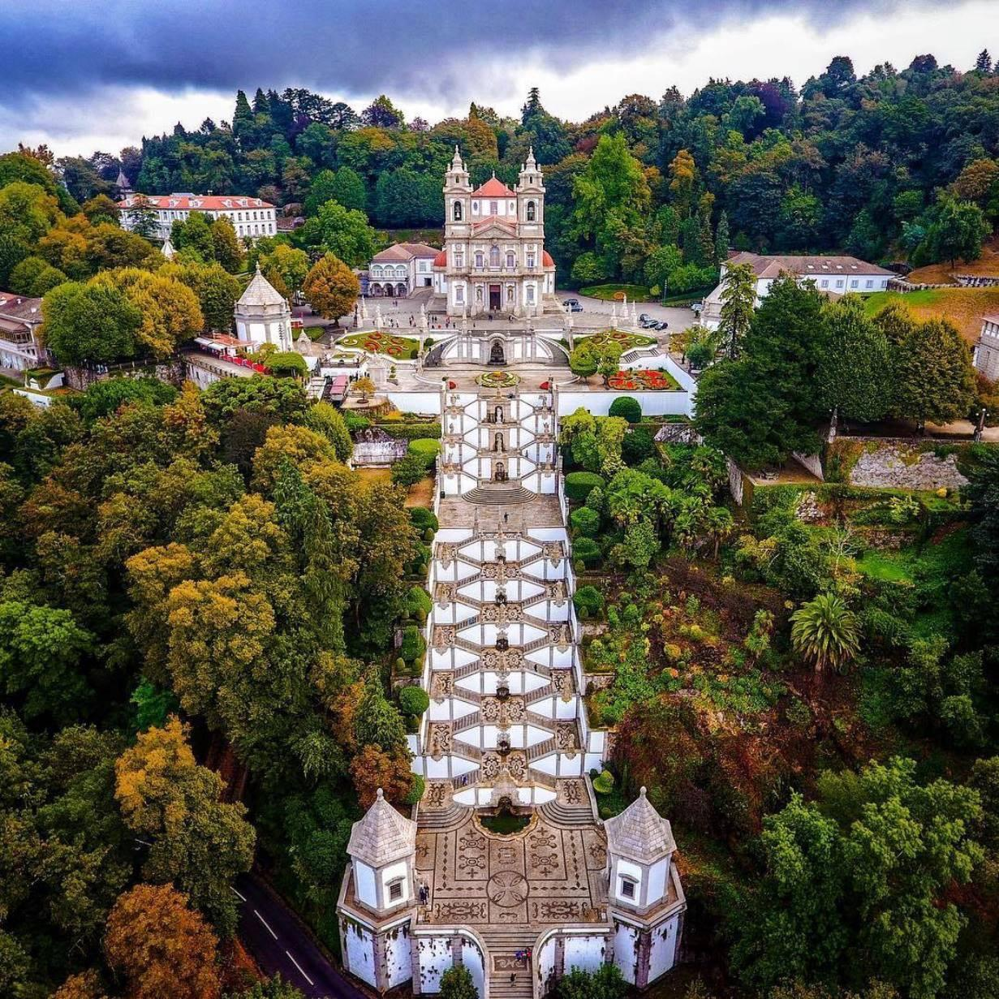
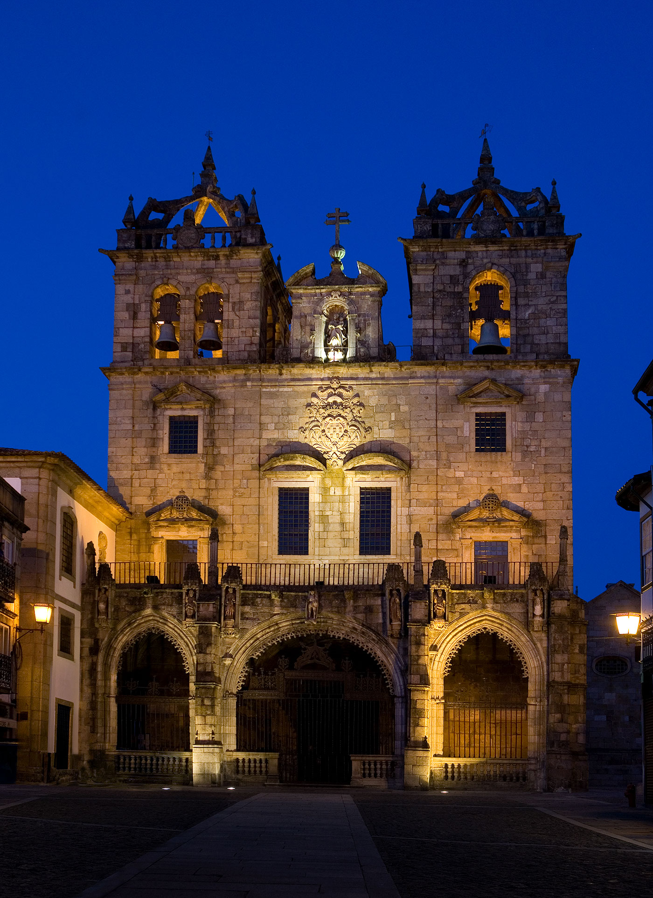

Historical Sights in Braga
Explore centuries of history, iconic sanctuaries, and stunning architecture.

Must VisitBom Jesus do Monte
UNESCO World Heritage site famous for its baroque monumental zigzagging stairway.
- Tenões, Braga
- Free entry (Funicular €2)

Student DiscountSé de Braga (Cathedral)
The oldest cathedral in Portugal, blending Romanesque, Gothic, Manueline, and Baroque styles.
- City Center, Braga
- €2.50 with Student Card
 Free Entry
Free Entry
Jardim de Santa Bárbara
A colorful geometric botanical garden located next to the medieval Episcopal Palace.
- Rua do Justino Cruz
- Open 24/7
Erasmus Local Tip
Take bus line 2 or 77 from the city center directly to the base of Bom Jesus do Monte. If you don't want to walk up the 573 steps, the water-powered funicular costs only €2!